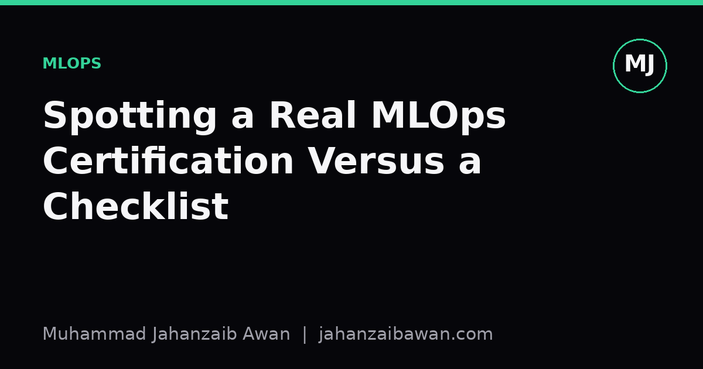

Spotting a Real MLOps Certification Versus a Checklist
Badges are cheap and pipelines are hard. Here is how to tell whether a certification actually taught someone to run machine learning in production, or just how to click through a course.

Why this distinction actually matters
MLOps as a label has grown faster than the shared understanding of what it means. A certification in this space should prove that someone can take a model from a notebook to a system that serves predictions reliably, survives data drift, and can be rolled back when it breaks. In practice, a large share of courses teach the vocabulary of MLOps without ever forcing a learner to face the conditions that make it necessary in the first place.
This matters because hiring managers and team leads increasingly use certificates as a filter. If the filter rewards memorising the names of tools rather than reasoning about failure modes, it quietly lowers the bar for the whole field. Someone can finish a course having watched a presenter deploy a model once, in a clean environment, with no traffic, no retraining schedule, and no incident, and walk away with a credential that looks identical to one earned by someone who actually debugged a broken pipeline at two in the morning.
The cost is not abstract. I have seen the pattern where a certificate signals familiarity with a dashboard rather than judgement about when to trust it. A genuine certification should leave scars, in the sense that the learner has made a mistake, seen the consequence, and had to fix it under constraints that resemble production rather than a tutorial.
What a checklist course looks like from the inside
The giveaway is usually the shape of the assessment. A checklist course asks you to follow a sequence of steps exactly as demonstrated: containerise this model, push it to this registry, wire it into this orchestration tool, click deploy. Success is defined as reaching the final screen with no errors. There is rarely a step where the given approach is wrong and you have to notice it.
Consider a concrete example. A course teaches you to set up a retraining pipeline that triggers whenever new data arrives, then evaluates the model on a fresh test split before promoting it. That sounds sensible until you look closely at how the split is built. If the course generates the test set by taking a random sample from the full historical dataset after the new data has already been merged in, it has created leakage: information from the future is sitting in the training set because the split ignores time. A learner who follows the steps as given will produce a pipeline that reports excellent accuracy and quietly degrades the moment it meets genuinely new data, because the validation numbers were never honest in the first place.
A genuine certification would stop at exactly that point and ask the learner to explain why the split is wrong, what a time-based split should look like instead, and what symptoms would appear in production if the mistake went uncaught, such as a model that looks stable in offline evaluation but drifts within weeks of deployment. A checklist course moves on to the next slide, because the goal was to finish the pipeline, not to interrogate it.
Another tell is how monitoring is treated. Checklist courses often reduce monitoring to installing a dashboard that shows latency and error rates. A serious course treats monitoring as a design problem: which metric would actually catch a silent failure, how long would it take to notice a shift in the input distribution, and what is the cost of a false alarm versus a missed one. If a course never asks you to set a threshold and then justify it against a realistic cost trade-off, it is teaching installation, not operations.
Questions that separate signal from decoration
Before trusting a certification, whether for yourself or when evaluating a candidate, it helps to ask a short set of pointed questions. Does the course require working with a dataset that has a genuine time dimension, so that leakage is a real risk rather than a theoretical warning? Does it require the learner to roll back a deployment after a regression, rather than only deploying forward? Does any part of the assessment involve a model that performs well in one evaluation but fails for a reason that is only visible if you think about how the data was collected, such as a label that was generated using information not available at prediction time?
A second useful test is whether the course ever asks the learner to defend a number. In a real pipeline, someone will eventually ask why the reported accuracy is ninety four percent and whether that number would hold up on a different slice of users, a different time window, or a different region. If a course lets every metric stand unchallenged, it is training people to report numbers rather than to question them, which is precisely the habit that causes expensive surprises after a model ships.
A third signal is reproducibility. Ask whether the course requires pinned dependencies, a fixed random seed where relevant, and a record of exactly which data version produced a given model. If two learners can run the same exercise on the same day and get materially different results without understanding why, the course has not taught the discipline that MLOps is supposed to be built on. Reproducibility is not a nice-to-have add-on, it is close to the entire point: without it, no claim about a model's performance can be trusted by anyone other than the person who made it.
The practical takeaway
None of this means every certification needs to be a research project. A short course can still be worthwhile if it is honest about its scope and teaches a narrow skill well, such as containerising a model correctly or configuring a specific orchestration tool. The problem is not shortness, it is the pretence that following a sequence of clicks is equivalent to understanding why each step exists.
When judging a certification, look for evidence that it forced a mistake and then forced a recovery from that mistake. Look for a split that respects time, a metric that has to be defended, and a pipeline that has to be reproduced by someone other than the person who built it. If a course or a certificate cannot point to at least one moment where the learner had to notice something was wrong rather than simply follow instructions, treat the credential as a description of exposure, not of competence, and weigh it accordingly.